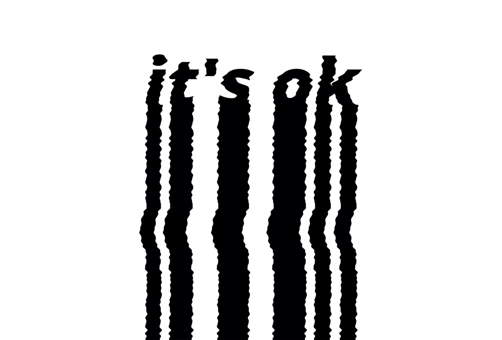
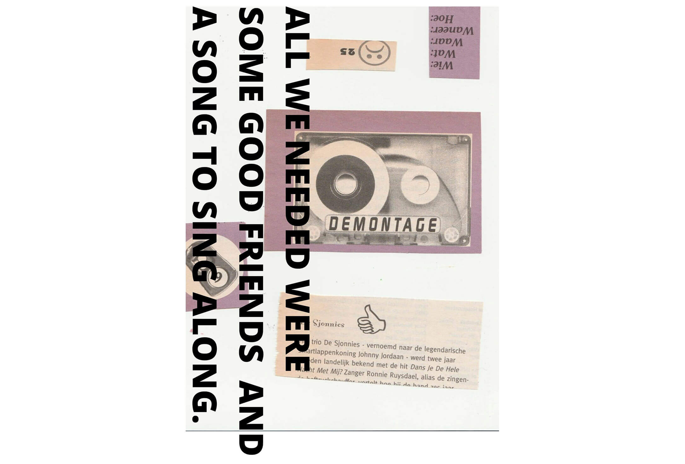
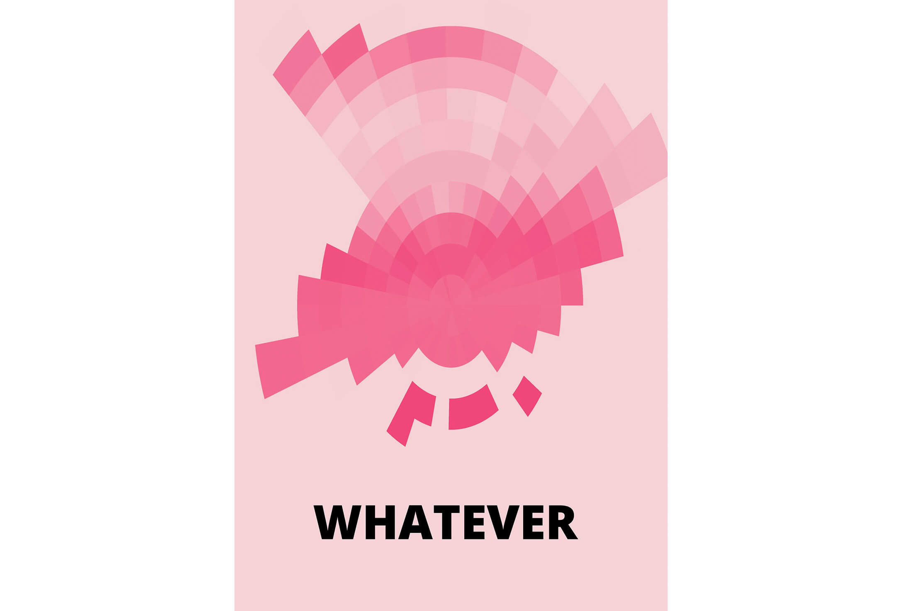
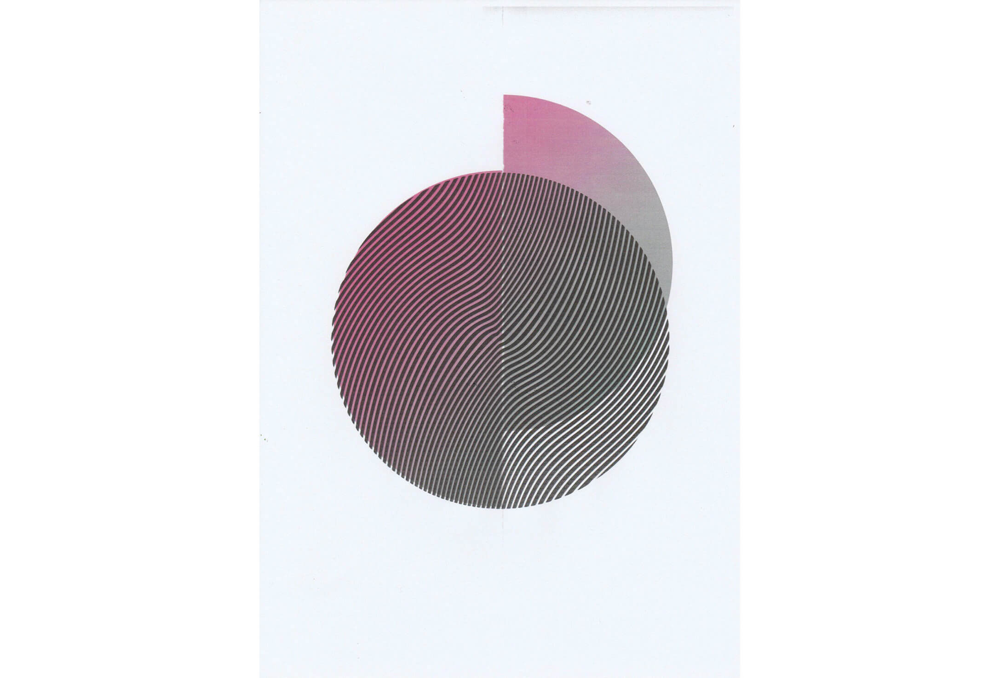
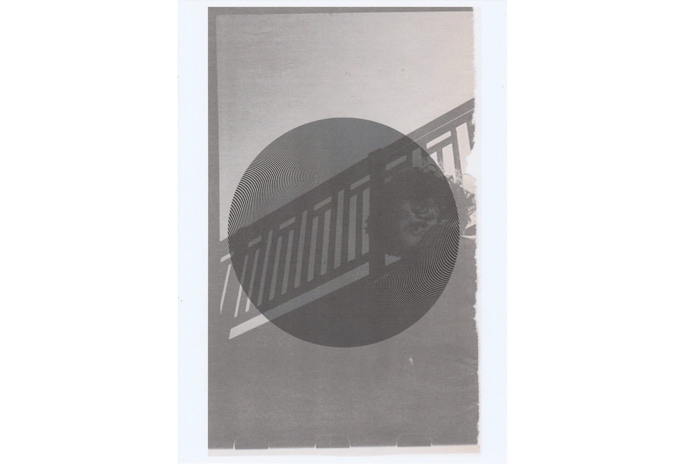
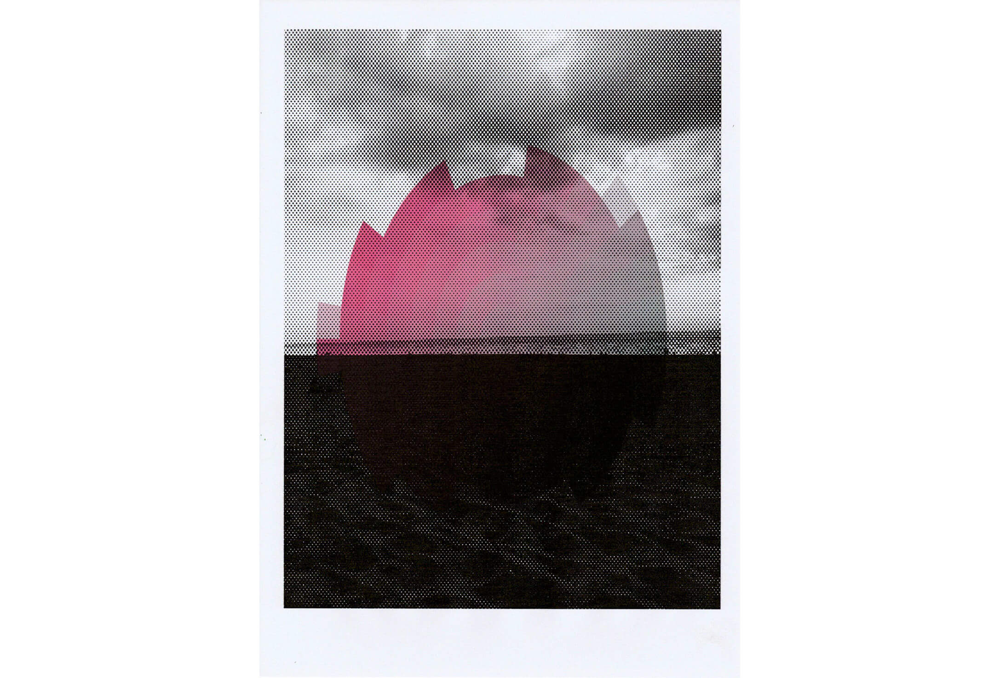
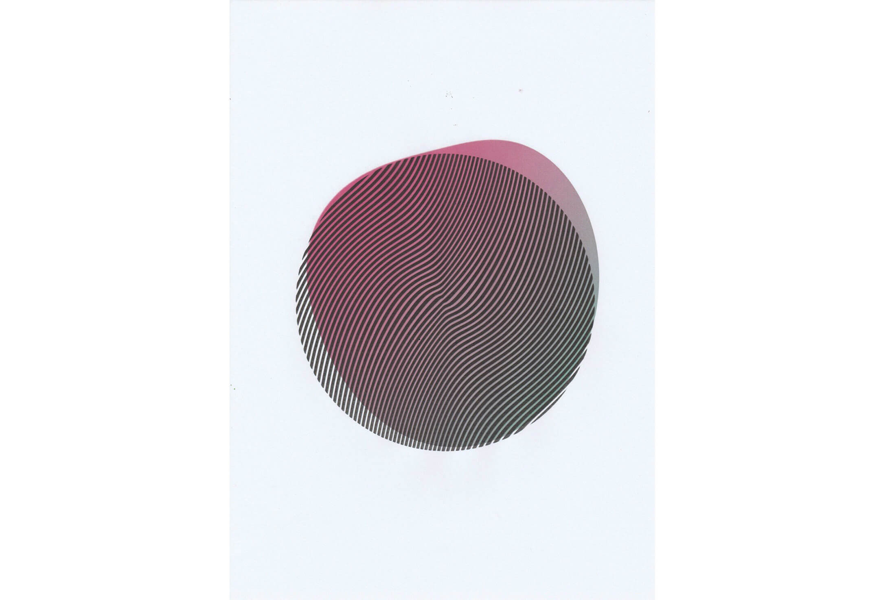
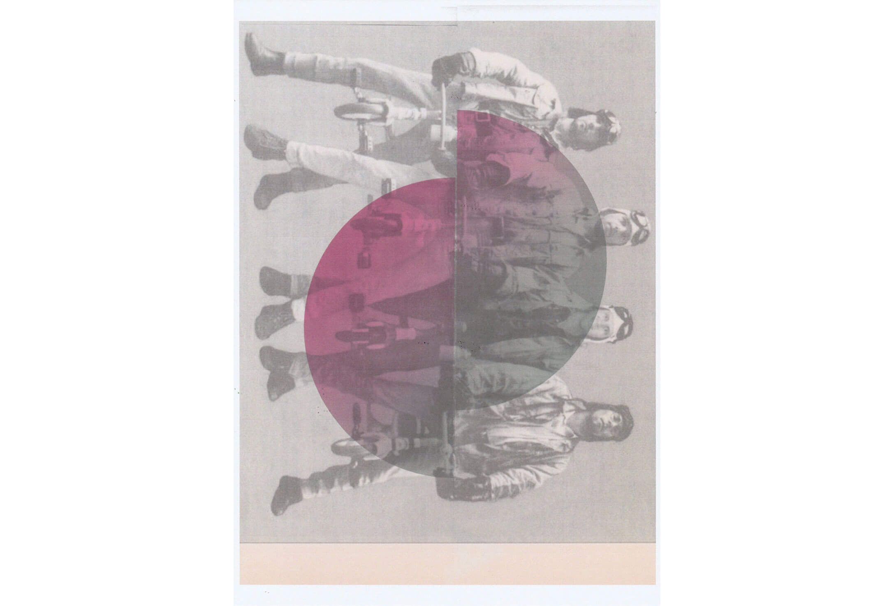
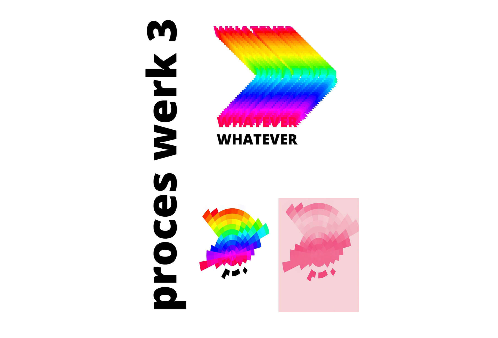
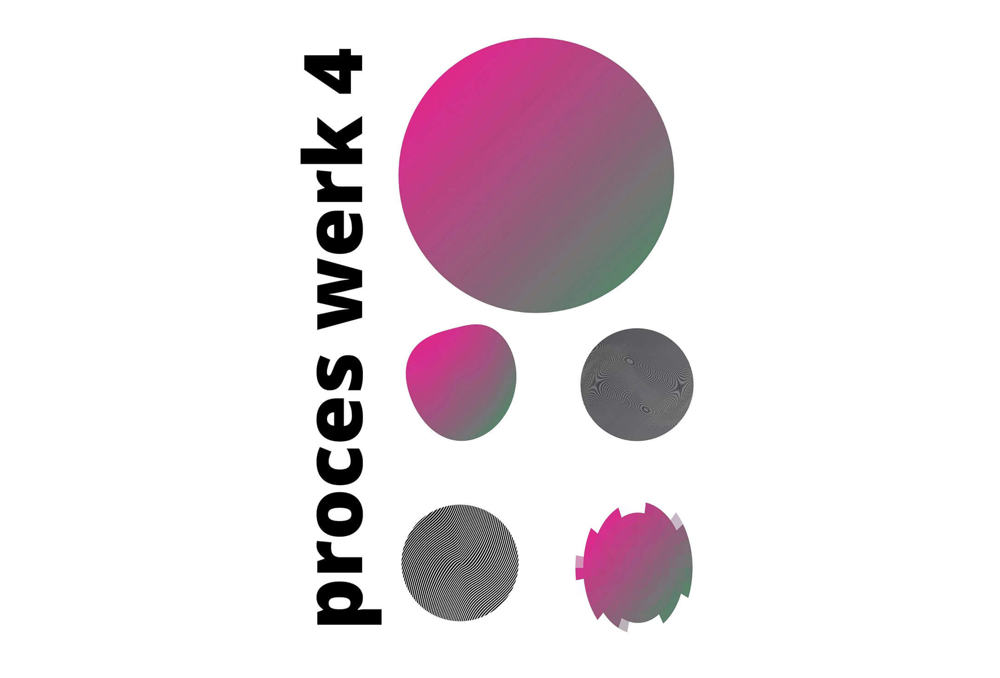

Het gevoel van herinneringen
Gwyn den Boer 2020
Deze werken begonnen met 3 oude muziekbladen die ik bij de kringloop had gevonden. Terwijl ik op de vloer van de kringloop winkel zat en door de tijdschriften bladerde kwam er een gedachte op in mijn hoofd: tijdschriften (het woord zegt het al) zijn iets heel tijdelijks. Het is zo zonde, dacht ik. De vormgeving,
de kleurencombinaties en de foto’s waren zo mooi, maar de informatie was totaal niet meer relevant. En ik besloot dat dit mijn uitgangspunt zou worden.
Ik nam de bladen mee naar huis en haalde ze helemaal uit elkaar. Ik besloot de tijdschriften helemaal te ontleden en de kleuren, vormen en foto’s te gebruiken om nieuwe ‘modernere’ werken te maken.
The feeling of memories
Gwyn den Boer 2020
These works started with 3 old music magazines that I had found at the thrift shop. While I was sitting on the floor of the shop and browsing through the magazines a thought came into my head: magazines are something so temporary. It's such a shame, I thought. The design, the colour combinations and the photos were so beautiful, but the information was totally irrelevant. And I decided that this would be my starting point.
I took the magazines home with me and took them apart. I decided to completely dissect the magazines and use the colors, shapes and photos to create new 'more modern' works.
Click here to talk with the artist! 
Werk 1
Ik was als eerst geïntrigeerd door de lettertypes, dus daar wilde ik als eerst iets mee doen. Ik verplaatste me in die tijd en dacht meteen aan oude telefoons, (je weet wel met zo’n draad er aan.) en ik dacht aan films uit die tijd waarin mensen op hun bed liggen te bellen met hun huilende vriendin. Dit gevoel wilde ik in één zin overbrengen, dus ik ging op zoek naar een zin die je huilend aan de telefoon zou zeggen. En ik maakte het, hoe zeg je dat, wiebelig. Voor het krakerige gevoel van een slechte verbinding en een huilende persoon aan de andere kant van de lijn waarvan je zeker weet dat die niet oké is.
Work 1
I was first intrigued by the fonts, so I wanted to do something with them. I imagined the time they were made and immediately thought of old phones, (you know, with a wire on it.) and I thought of movies from that time where people were lying on their beds, calling their crying girlfriend. I wanted to capture this feeling in one sentence, so I went looking for a sentence that you would say crying on the phone. And I made it, how do you say, wobbly.
For the crunchy feeling of a bad connection and a crying person on the other end of the line that you're sure isn't okay.

Werk 2
Ik had een aantal plaatje uitgeknipt die ik interessant vond. Omdat ik lui ben scande ik ze allemaal samen in (dan kon ik ze later los knippen dacht ik) Ik bekeek het resultaat op mijn laptop en besloot meteen dat ik ze niet los ging knippen. Het zag er uit alsof dit iemands persoonlijke herinneringen waren. Alsof het allemaal een verhaal had. Een bierlipje van de eerste keer dat ze dronken werd en een cassette bandje met de muziek van eer road trip met vrienden. Ik hoefde alleen nog maar even opzoek te gaan naar een quote die dit gevoel duidelijk zou make.
Work 2
I had cut out a number of pictures that I found interesting. Because I'm lazy I scanned them all together. (Then I could cut them loose later I thought) I looked at the result on my laptop and immediately decided I wasn't going to cut them loose. It looked like these were someone's personal memories. As if it all had a story. A beer clip from the first time she got drunk and a cassette tape with the music of road trip with friends. All I had to do was look for a quote that would make this feeling clear.

Werk 3
Ik had me voorbereid op deze expo door videos te kijken van vormgevers, zodat ik wat inspiratie op kon doen. Ik zag veel felle kleuren en wilde daar toch ook iets mee proberen, dus maakte ik dit. Het duurde erg lang maar ik vond het eindresultaat totaal niet interessant. Ik wilde het nog niet opgeven, dus ik experimenteerde met wat filters. Dat was al een stuk interessanter, het was niet meer te lezen, maar het was wel een interessante vorm. Alleen de kleuren, dat was niet helemaal mijn ding en het had ook nog niks te maken met de tijdschriften. Dus ik maakte het hele werk dezelfde kleur lichtroze als de titels van een van de tijdschriften. Je kon niet meer lezen wat er stond, wat ook wel weer ironisch is gezien de tekst, dus ik besloot het er toch nog onder te zetten als een soort inside joke.
Work 3
I had prepared myself for this expo by watching videos of designers, so I could gain inspiration. I saw a lot of bright colors and wanted to try something with them myself, so I made this. It took a long time but I didn't find the end result interesting at all. I didn't want to give it up yet, so I experimented a bit with some filters. That was a lot more interesting, it couldn't be read, but it was an interesting form. Only the colors, that wasn't quite my thing and it had nothing to do with the magazines. So I made the whole work the same colour light pink as the titles of one of the magazines. You couldn't read what it said anymore, which is ironic considering the text, so I decided to put it underneath as a kind of inside joke after all.

Werk 4
Ik wilde nog meer doen met de kleuren van de tijdschriften, dus ik begon met een cirkel van de twee basiskleuren van de tijdschriften. Ik gooide hier om beurt alle filters over die ik had en de gene die een interessante uitkomst hadden bewaarde ik. Daarna besloot ik om ze over foto’s uit de tijdschriften te printen als een soort home made risoprint en daarna over elkaar. Eerst vond ik het frustrerend hoe de kwaliteit achteruit ging elke keer als ik het opnieuw kopieerde of uitprintte. Maar later bedacht ik hoe de prints zo alleen maar meer van de sfeer van de tijdschriften kregen. Nu vind ik dat een van de mooiste dingen aan deze prints.
Ze hebben een bepaald nostalgisch gevoel.
Work 4
I wanted to do more with the colors of the magazines, so I started with a circle with the two base colors of the magazines. I threw over all the filters that I had and the ones that had an interesting outcome I kept. After that I decided to print them over pictures from the magazines as a kind of home made risoprint and then over each other. At first I find it frustrating how the quality deteriorated every time I copied or reprinted it. But later I thought about how the prints just got more of the atmosphere of the magazines. Now I think that's one of the nicest things about these prints. They have a certain nostalgic vibe.





